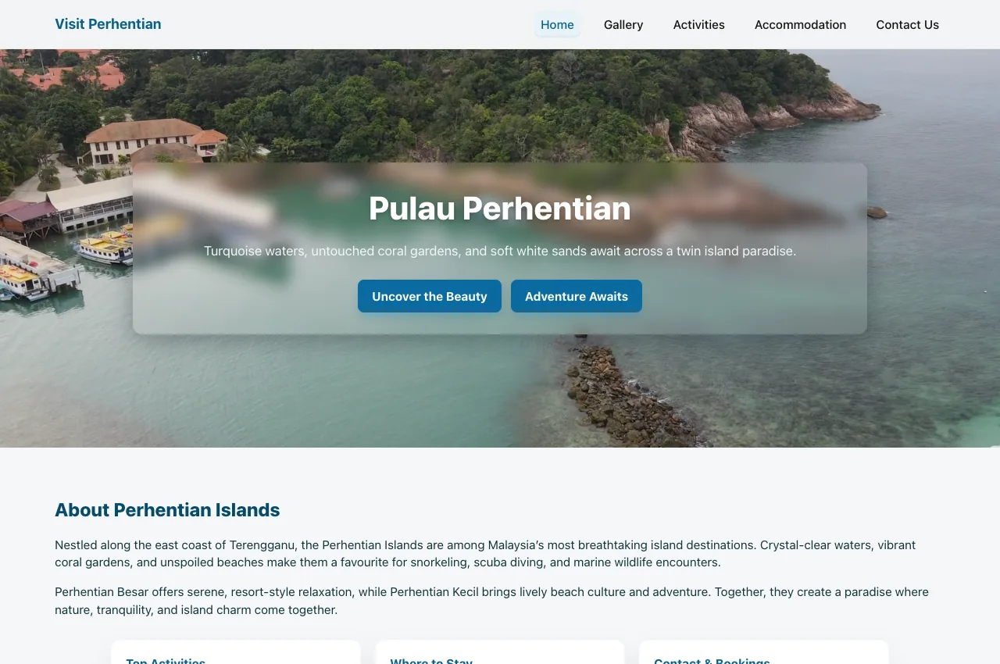
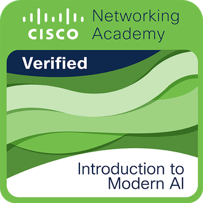
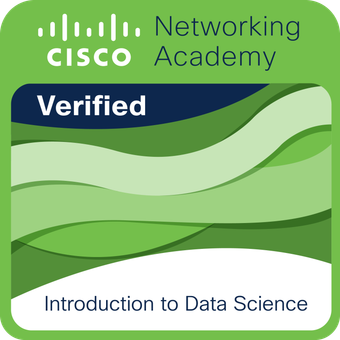

Education Principal
Future Faculty
–present
- Teach and mentor students through personalised lessons and structured learning materials.
- Use digital tools, assessment and student feedback to identify learning needs and refine teaching.
Educator & Computer Science Enthusiast
Mathematics · Statistics · Data Science and Analysis
An educator and computer science enthusiast with almost a decade of experience in teaching Mathematics & Additional Mathematics. Currently pursuing a Bachelor’s Degree in Computer Science at Universiti Teknologi MARA (UiTM), with interests in data science and educational technology.
Future Faculty
–present
XSEED Education
–
Edunation Resources
–
Bermaz Auto Berhad
–
Universiti Teknologi MARA (UiTM)
–present · Part-time
Universiti Teknikal Malaysia Melaka (UTeM)
–
Universiti Teknologi MARA (UiTM)

Travel information website
A travel information website introducing Pulau Perhentian, its activities and accommodation. Built with HTML, CSS and JavaScript for CSC584 Web Programming.
Planning and prototype stage
An early project exploring Elo ratings and Bayesian Knowledge Tracing for personalised learning, connecting my teaching background with my interest in educational technology.

